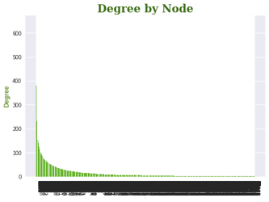
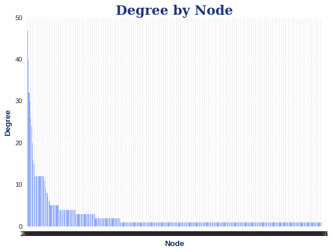
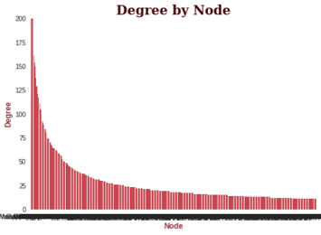
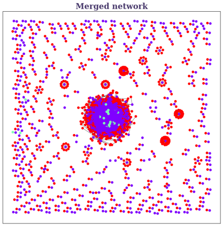
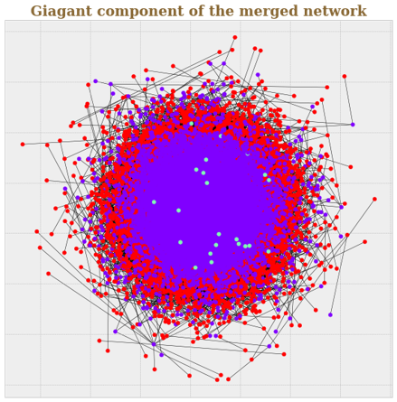
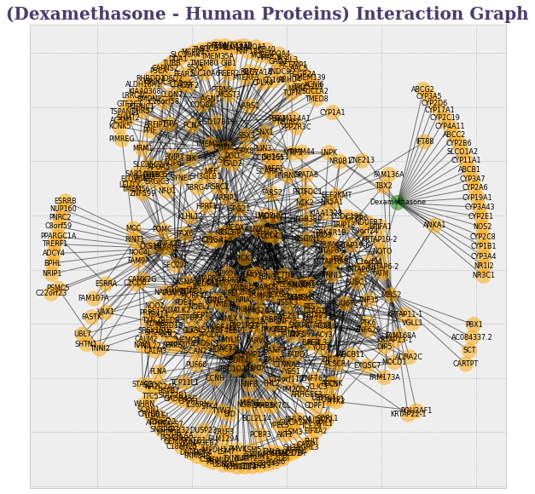
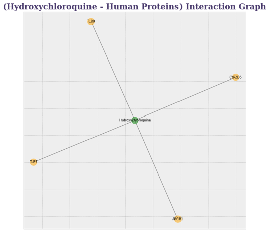

Network Biology Challenge
- Use NetworkX to calculate network theory measures (degree, distance, betweeness centrality, and others you might find interesting) on each of the three PPI networks (COVID-Human, Human, Drug-Human). What is the distribution of these network measures? What are the nodes or node pairs with the highest value for these measures in each network?
- Combine these three PPI networks. Do the same as in part 1 but for this combined network.
Below are some of the most representative figures of our analysis, all the graphs generated, as well as more technical details can be found in:
GitHub
Graphical representation of the Sars Cov 2- Human Protein Protein Interactions network, from Gordon et al 2020 The black noses represent viral proteins, while the red ones represent human.

Representation of the human protein-protein interactome.
Drug interactome and their respective human protein targets, the purple ones represent human proteins, while the yellow ones represent drugs.

The next graphs represent the distribution of degrees of the networks presented so far, a characteristic power law distribution of the biological networks can be appreciated.



We also calculated some other properties from the previous Networks, that's why we propmt you to have a look of our complete results in our GitHub page.
As next step, we obtained a merged network from the 3 previous ones. In the next image (on the left) viral proteins are highlighted in color meant, human proteins in purple and drugs in red.
Then, we computed the giant component of the merged network (on the right panel, it follows the same color code).


We decided to make subgraphs from thee merged graph, but this time focusing on specific drugs proposed as candidates for COVID-19 and we analyzed its neighbors to make a functional enrichment analysis (the results are in the Github repository). We can see the drug in color green, and the human proteins in color yellow.


We made functional analysis (using "gprofiler") of the neighbor proteins of each drug in order to try to elucidate how this drugs work in the organism. To see the interactive plot, click here:
Functional Enrichment
Conclusions and Perspectives
Here we only show some network properties that can be calculated from networks and also a short example of what could be investigated through the use of networks. As the information found here indicates, these tools have been useful in real situations, such as the current COVID-19 pandemic. And it is important to take into account, that computational analysis like this one (protein-protein interactions, genetic markers, transcriptomics, protein-drug interactions, among many others) are actually being performed around the world in order to find an effective cure against the SARS-CoV2 virus.
In this sense, "Network Biology" has made it possible to join separate fields such as mathematics, computing and biology to create possitive solutions for which humanity will always be grateful.
As a further analysis, we propose to use tissue-specific networks (lung & liver) and merge them again with the SARS-CoV2/Human and Drug/Human Networks. Then, we would see how tissue-specific proteins are connected with SARS-CoV2 proteins, and if these interactions are related to the observed tissue-specific symptoms by making a functional analysis. After this, we would like to analyze if some known drugs affected certain functions of the organs and try to elucidate the way drugs act in a specific organ/tissue.
As a further analysis, we propose to use tissue-specific networks (lung & liver) and merge them again with the SARS-CoV2/Human and Drug/Human Networks. Then, we would see how tissue-specific proteins are connected with SARS-CoV2 proteins, and if these interactions are related to the observed tissue-specific symptoms by making a functional analysis. After this, we would like to analyze if some known drugs affected certain functions of the organs and try to elucidate the way drugs act in a specific organ/tissue.